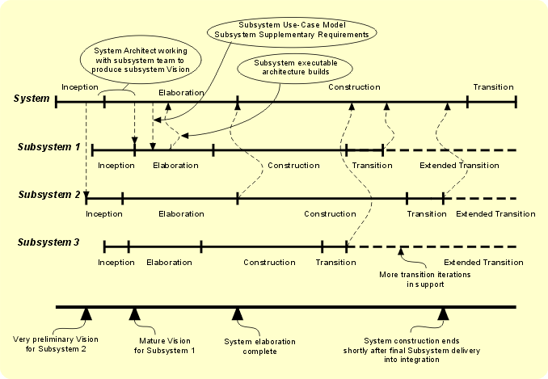

| Delivery Process: Systems Engineering Delivery Process |
 |
|
| Description | Work Breakdown Structure | Team Allocation | Work Product Usage | ||||||
| Context |
|---|
| The overall system lifecycle, is, as any other RUP project, divided into inception, elaboration, construction and
transition phases, which have the same meaning as usual. The iterations within these phases also are comprised of
invocations of the same disciplines - requirements, analysis and design, implementation and so on. However, at this
'outermost' planning level, the some activities and artifacts are added, and some specialized for systems engineering, and
there are some additional roles that do not appear in pure software development.
At this level the activities are concerned with the specification of things to be built (subsystems), their behavior, interfaces and other characteristics, and their subsequent integration and test, rather than the detail of their design or their implementation (in code, hardware or manual process). So how do the subsystems come into being? They arise from separate, parallel instance(s) of the RUP lifecycle, fed by and feeding back to the system (outermost) lifecycle. We can in fact describe the construction of systems of systems in this way (because in RUP systems are defined in the context of an enterprise, with the expectation they will potentially interact with other systems) by recursively invoking cycles like the outermost one until reaching the software (or hardware) construction level, which would use the default set of RUP activities etc. So at the outmost level, we specify, for example, a subsystem vision artifact, that becomes the vision artifact for the subordinate RUP lifecycle. While it is not necessary to do so, this gives the project manager the freedom to contract out the development of subsystems in a formal way. The outermost cycle takes what is produced by the subordinate cycles and integrates it to validate the system level architectural decisions, so the elaboration phase at the outermost level still has the goal of producing a stable, executable architecture - with the ability to respond to issues discovered in the subordinate cycles.  Let's look at the way the lifecycles relate to one another: the figure above shows a system development with three subsystems. The overall system lifecycle is shown at the top and this is the 'outermost' planning level, which both subsumes (is an abstraction of) the subsystem lifecycles under it, and also contains activities of its own (System Architectural Analysis, for example). The relationship in time of the cycles is predicated on our expectations of what is required to begin and to exit the RUP phases. To begin inception, an initial Vision (perhaps arising from Business Modeling work) is needed to bootstrap the project into life. At the end of inception, the expectation is that the Vision is mature, the Business Case is acceptable, critical risks are identified, the System (or Software) Development Plan is established and perhaps a few significant use cases (and associated descriptions of flow of events) have been developed. Some system architecture proof-of-concept modeling may also have been done. Therefore, none of the subsystem inception phases can start until some initial (set of) Vision(s) has been created - i.e. the subsystems (at least some of them) have been identified and some notion of what they should do has been established - at the earliest, in some modeling or prototyping activity in system inception. The structure of the system in terms of subsystems will not be finally determined until some way into system elaboration, so subsystem inception also does not complete (with a mature subsystem Vision available) until some time into system elaboration. Work done at the system level in system elaboration generates the subsystem use-case model and subsystem supplementary requirements (which are then refined in subsystem elaboration) and work done at the subsystem level generates executable architecture builds, which are fed back to system elaboration. When subsystem elaboration finishes, subsystem architecture is stable and the subsystem use-case model and subsystem supplementary requirements are essentially complete. System elaboration does not complete until system architecture is stable, i.e. not until all subsystem architecture contributions have been integrated and all subsystem elaboration phases are complete. If there is tolerable attached risk, some subsystems may finish elaboration and proceed into construction before the completion of system elaboration. At least one iteration in the subsystem transition phase completes before the end of system construction, and then each subsystem enters an extended transition, which continues until the end of system transition. |
| Event Driven | |
|---|---|
| Multiple Occurrences | |
| Ongoing | |
| Optional | |
| Planned | |
| Repeatable |